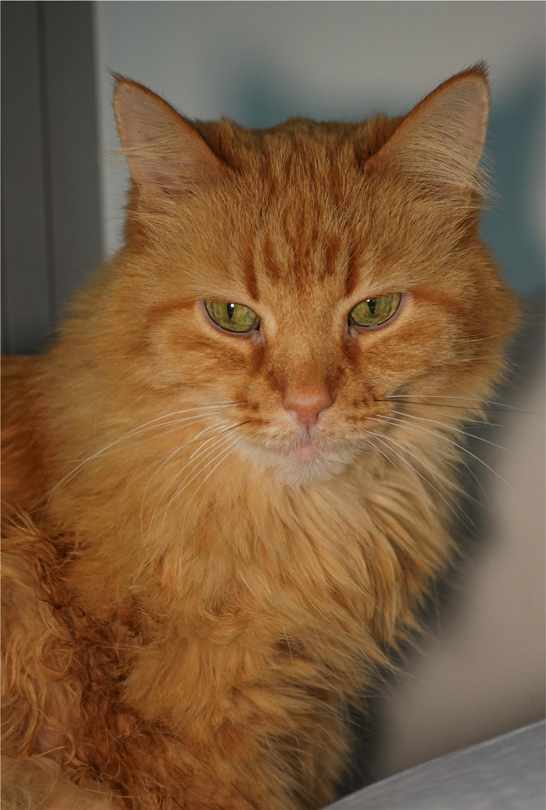

Hi This is my tryout for the web page.
And here is a picture of the cat that I am fostering↑
1. How to make friend with a cat
To make friend with a cat, fisrt you need to knee on the floor and gently let them sniff your hand. Watch their body language. Slow blink is suggested.
2. Where you can visit if interested in fostering/adopting
As an international student, I can't be constantly having a pet, but I could offer help by having these cute animals staying at a home for a fairly long time! Our cat has gained weight from 9.8 pounds to 10.25 pounds! It is said that he refused to eat at the shelter but he has been eating a lot at our place. I hope anyone has the same thought can realize they have a chance to help!
Here is a link to the shelter's foster page:Become a foster.
In case you wanna see the cute babies:Foster Candidates.